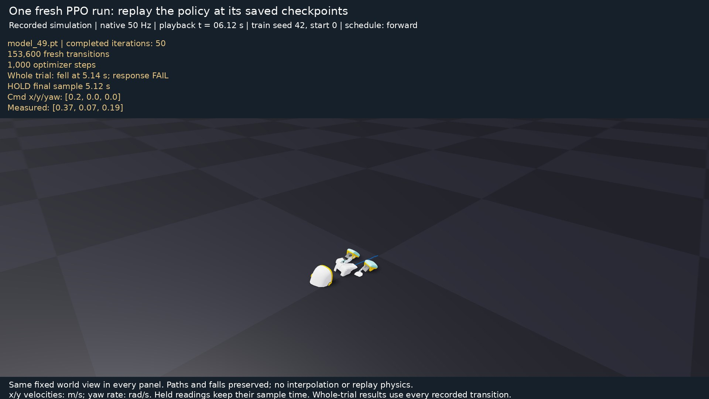

2. Try training before studying the recipe¶
Question: what can the duck learn from a short attempt?
Set up¶
Get the tutorial source first. While PR #28 is under review, the Microduck path is on its PR branch:
git clone https://github.com/isaac-sim/IsaacLabTutorial.git
cd IsaacLabTutorial
git fetch origin pull/28/head:microduck-tutorial
git switch microduck-tutorial
These commands create a fresh checkout. If you already have the repository, fetch and switch there after preserving your own changes. The remaining commands use its root directory and a Bash terminal.
Install the locked locomotion environment:
uv sync --project environments/locomotion --locked
This creates a separate environment and leaves the root SO-101 lock file unchanged. The locomotion lock pins Isaac Lab commit 90a16f06685dbf7948262eafa628c470b4cdc78c, Newton commit 42f7def118c2c4299ce493457bafd4e8a22a696e, RSL-RL 5.5.1, and MuJoCo/MuJoCo Warp 3.15. The environment builds Isaac Lab through its supported aggregate wheel builder so runtime resources are included. Its source revision differs from the root released-wheel setup.
Verify one duck before training¶
mkdir -p outputs
git rev-parse HEAD > outputs/tutorial-source.txt
uv run --project environments/locomotion --locked isaaclab list_envs --keyword MicroDuckTutorial-Velocity-Flat
uv run --project environments/locomotion --locked isaaclab zero_agent --task MicroDuckTutorial-Velocity-Flat --num_envs 1 --max_steps 2 --visualizer none
Expect the tutorial task in the list and a clean two-step simulation exit. This checks task discovery, asset access and the simulator without optimizing a policy. Missing CUDA, asset-download or import errors need fixing before training. A compatible NVIDIA driver is required; a CPU-only installation does not run these Newton GPU experiments.
Run a fresh attempt¶
uv run --project environments/locomotion isaaclab train --rl_library rsl_rl --task MicroDuckTutorial-Velocity-Flat --num_envs 128 --max_iterations 50 --seed 42 --run_name first_attempt --visualizer none
The project supplies a complete task so you can run before understanding every manager term. This command starts a fresh learner. It does not load a supplied successful policy.
Where does that command get its settings?
flowchart TD
CLI[isaaclab train: task ID and CLI overrides] --> Registry[config/microduck/__init__.py: task registry]
Registry --> Env[config/microduck/env_cfg.py: NominalEnvCfg]
Registry --> Agent[config/microduck/agents/rsl_rl_ppo_cfg.py: PPORunnerCfg]
Env --> Terms[Scene, actions, observations, rewards, resets]
Terms --> Run[Parallel simulation and learning]
Agent --> Run
Run --> Files[logs/rsl_rl/microduck_tutorial/run directory]
Files --> Params[params/env.yaml and agent.yaml]
Files --> Checkpoint[model_N.pt, run.json and TensorBoard events]
Config filenames above are relative to src/isaaclab_tutorial/tasks/locomotion/. Generated logs are relative to the repository root. The resolved YAML files capture the settings used, including your overrides. Keep them with the checkpoint; a model file alone does not describe its observation or actuator contract. The robot USD bytes are checked before scene construction.
The budget is 128 environments × 24 control steps × 50 iterations = 153,600 transitions. It is a teaching preview, not a promise to learn walking. Compilation and asset download can dominate the first launch. If memory is limited, reduce --num_envs; record the changed transition budget.
Find the printed run directory under logs/rsl_rl/microduck_tutorial/. Checkpoints are written at the configured interval and at the end. Iterations, episode duration, tracking errors, and fall terminations are more useful together than reward alone.
Verify that the nominal task is registered
From the IsaacLabTutorial repository root, run:
uv run --project environments/locomotion --locked isaaclab list_envs --keyword MicroDuckTutorial-Velocity-Flat
The actual nominal row from the pinned environment is shown as field/value pairs for readability:
Task Name: MicroDuckTutorial-Velocity-Flat
Entry Point: isaaclab.envs:ManagerBasedRLEnv
Config: isaaclab_tutorial.tasks.locomotion.config.microduck.env_cfg:NominalEnvCfg
RL Libraries: rsl_rl
Other matching task rows also appear. Registration alone does not launch simulation; use the nominal task for this first PPO attempt.
Keep this first attempt identifiable¶
Copy the exact printed run directory into the first line below, replacing YOUR_FIRST_ATTEMPT. The final checkpoint of this 50-iteration run is normally model_49.pt:
export DUCK_FIRST_RUN="logs/rsl_rl/microduck_tutorial/YOUR_FIRST_ATTEMPT"
export DUCK_FIRST_CHECKPOINT="$DUCK_FIRST_RUN/model_49.pt"
printf 'export DUCK_FIRST_RUN=%q\nexport DUCK_FIRST_CHECKPOINT=%q\n' "$DUCK_FIRST_RUN" "$DUCK_FIRST_CHECKPOINT" > outputs/tutorial.env
Keep these references throughout the course. In a new Bash terminal, run source outputs/tutorial.env from the repository root. Reward candidates get their own names; they must not replace this first attempt through a moving latest selector.
Let this bounded run finish. If you interrupt it, use an existing saved checkpoint and record its smaller completed budget; an interruption does not guarantee a new checkpoint. For limited GPU memory, try 32 environments and keep that choice in subsequent equal-budget comparisons.
Replay what you actually trained¶
uv run --project environments/locomotion python scripts/locomotion/evaluate.py --checkpoint "$DUCK_FIRST_CHECKPOINT" --capture
This attempts the fixed command protocol and stops at the first fall or timeout. It writes outputs/evaluation/receipt.json and a pre-fall image. A native window is optional: add --viewer on a graphical desktop. An explicitly chosen checkpoint must belong to the nominal task. The convenience selector latest also accepts reward-modified runs of that task, so use the saved first-attempt path for this course.
Look for: finite learning diagnostics, a real checkpoint, and its actual behavior. Falling, drifting, or barely moving are valid learning observations. A traceback, non-finite state, or missing checkpoint is a software/setup failure to diagnose.
Record: “My first policy …; the episode ended because ….”
See one actual short attempt

This fresh seed-42 run collected 153,600 transitions and made 1,000 optimizer steps. Its frozen policy fell at 5.14 s in the nominal fixed-command test, covering 25.7% of the intended 20 seconds. The shown replay holds the last recorded pre-reset pose at 5.12 s; no physics continues after the episode ends. This is the short learner's own result. The larger walking policy is a separate run.
Open its actual training curves and replay information when you reach lesson 8. Your run can differ; keep its own result.
Do not wait for a good gait before moving on. Next, control the puppet duck yourself.